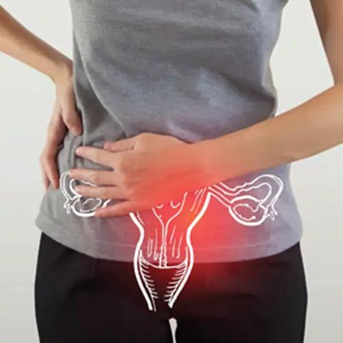
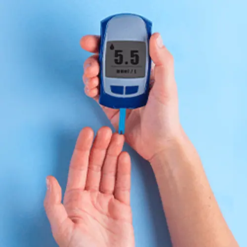
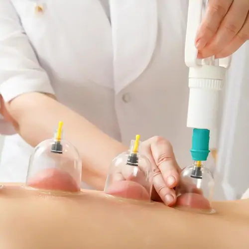
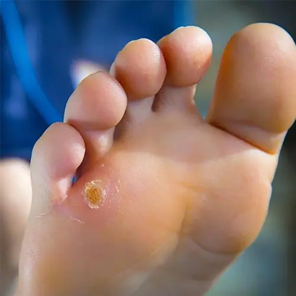
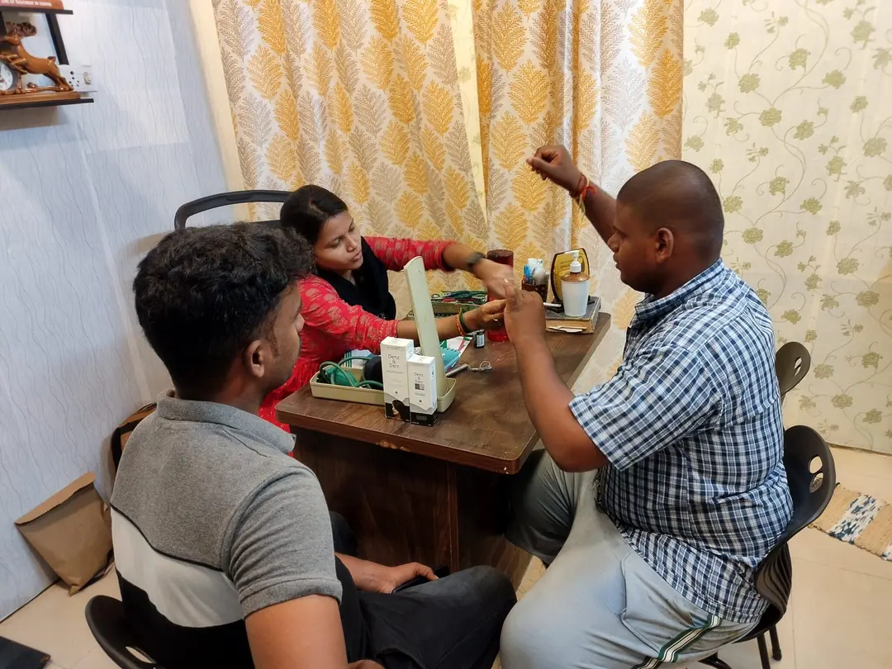
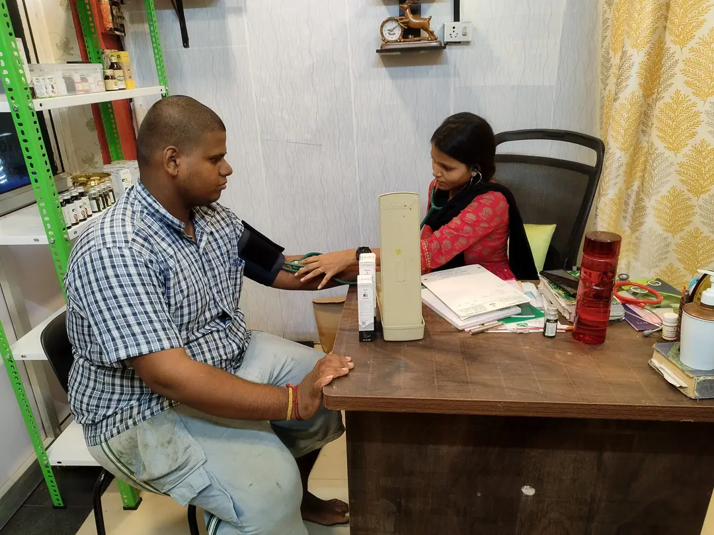

Breathing health · Care guide
Wheezing and asthma
Wheezing is a symptom, not a diagnosis. It can occur with asthma and with other breathing or respiratory conditions.
What it is
Wheezing is a symptom, not a diagnosis. It can occur with asthma and with other breathing or respiratory conditions.
How it may develop
In asthma, sensitive airways become inflamed and narrow. Symptoms can be triggered by allergens, smoke, cold air, exercise, infections, or air pollution. Other causes of wheezing need their own assessment.
Care and treatment options
- Arrange a clinical assessment for repeated wheezing, cough, chest tightness, or breathlessness; breathing tests may be needed.
- Use prescribed inhalers exactly as directed and ask a clinician or pharmacist to check your inhaler technique.
- Keep an asthma action plan if you have asthma, attend reviews, and identify triggers with your care team.
Learn more
Important: This page is general health information, not a diagnosis or personal treatment plan. Do not stop or replace prescribed care. Before starting Siddha medicines, supplements, or a procedure, discuss it with your treating clinician and share your complete medicines list.
Explore more
More areas of care
Infertility care
Fertility concerns can involve either partner, both partners, or have no clear cause at first. A careful assessment helps identify the right next step.
Read the care guide
PCOS / PCOD
PCOD is a commonly used name for polycystic ovary syndrome (PCOS), a hormone condition that can affect periods, skin, hair, fertility, and metabolic health.
Read the care guide
Diabetes care
Diabetes has different types and causes. Blood tests and a clinician's assessment are needed to diagnose it and shape a safe care plan.
Read the care guideFire cupping
Fire cupping is a traditional dry-cupping method that uses heat to create suction in a cup placed on the skin.
Read the care guide
Hijama / cupping
Hijama usually refers to wet cupping, where the skin is pierced so a small amount of blood enters the cup. Dry cupping uses suction without piercing the skin.
Read the care guideKati Vasthi
Kati Vasthi is a traditional external therapy in which warm oil is retained over the lower back for a period of time.
Read the care guideSkin problems
Rashes, itching, acne, pigment changes, and infections are different problems with different causes. An accurate diagnosis comes before choosing a remedy.
Read the care guideHair fall
Hair shedding can be temporary or ongoing. The best next step depends on the pattern and the underlying cause, rather than a one-size-fits-all oil or supplement.
Read the care guide
Corn on the foot
A corn is a small area of thickened skin that usually forms where repeated pressure or friction affects the foot.
Read the care guide
Piles (haemorrhoids)
Piles are swollen blood vessels in or around the anus. Bleeding or pain should not automatically be assumed to be piles.
Read the care guide
Sinusitis
Sinusitis is swelling of the lining of the sinuses, often after a cold or flu. Most short-term cases improve without antibiotics.
Read the care guideJoint pain
Joint pain can have many causes, including injury, inflammation, infection, or osteoarthritis. Care depends on which joints are affected and why.
Read the care guideWeight management
Weight is influenced by health, biology, medicines, sleep, stress, food access, and daily routines. A safe plan should be realistic and individual.
Read the care guideAutism support
Autism is a lifelong neurodevelopmental difference. Support should respect the person's strengths, communication, needs, and preferences.
Read the care guide